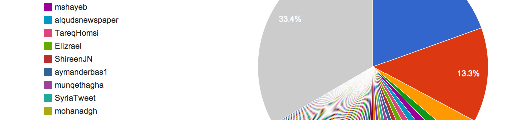

I have shown I can gather and analyze data on numerous projects, most recently with a social media data mining project. I learned how to gather data via the Twitter API, how to parse that data, and apply analysis methods to extract meaning from thousands of tweets regarding the Syrian revolution.
Our process took multiple weeks of data gathering. We refined our research questions along the way and iteratively found more precise methods for obtaining metrics concerning individual Twitter user’s influence among their peers in Damascus, Amman, Cairo, and Tunis. I was also involved in visualizing the data for the report, which further increased my analytical ability.